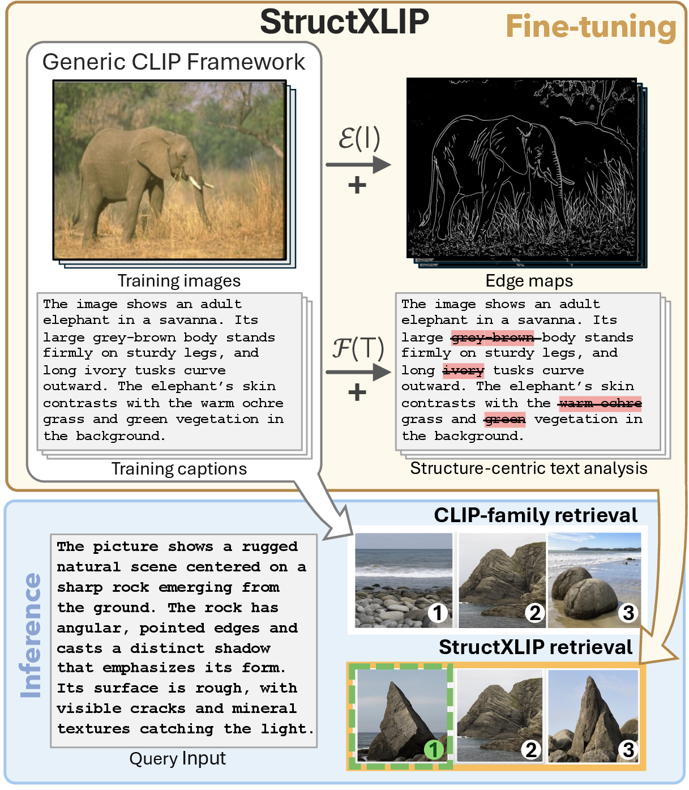
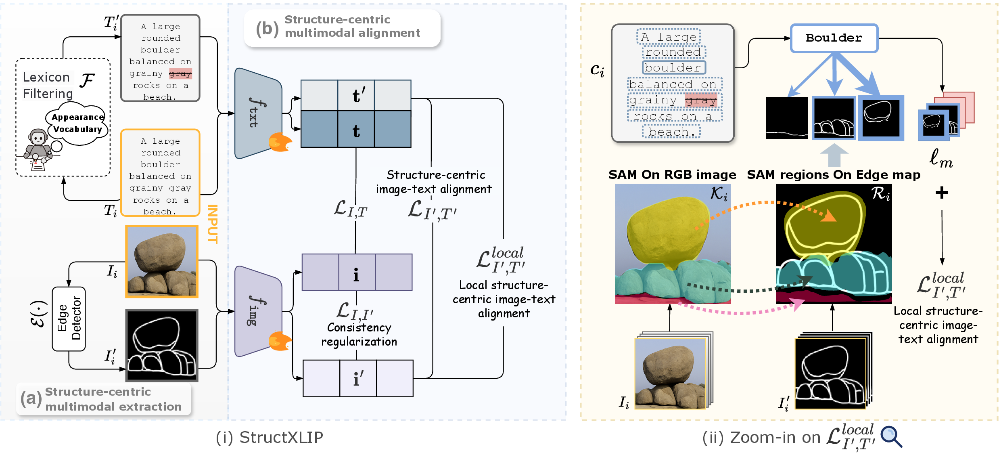
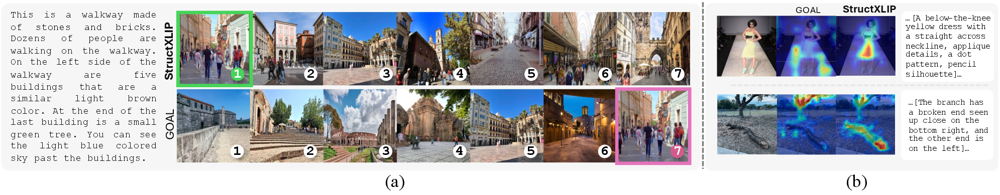

Structure-Centric
Vision-Language Alignment
Edge-based cues are fundamental to visual understanding. We extend this principle to vision-language alignment by explicitly modeling structural information across modalities, improving fine-tuning on long, detail-rich captions for cross-modal retrieval. We propose StructXLIP, a structure-centric fine-tuning paradigm that extracts edge maps as structural proxies and filters captions to emphasize structural content. Three auxiliary losses enforce global edge–text alignment, local region–phrase matching, and consistency between edge and RGB representations. StructXLIP consistently outperforms recent approaches across diverse retrieval benchmarks and serves as a plug-and-play enhancement for vision-language models.

Two-Stage Fine-Tuning
with Structural Cues
StructXLIP operates in two stages. First, it extracts complementary structural views edge maps for images via an edge detector, and structure-centric captions via lexicon filtering that removes appearance-related terms (colors, materials, textures). Second, it aligns these views at multiple granularities via three auxiliary losses added on top of the standard CLIP objective.

Three Structure-Centric Losses
Aligns edge maps and structure-centric captions via symmetric InfoNCE.
Matches textual phrases with semantically related edge regions for fine-grained alignment.
regularization
Anchors edge representations to the original RGB embeddings, preventing structural drift during fine-tuning.
ℒtotal = ℒI,T + λ₁ℒI′,T′ + λ₂ℒI,I′ + λ₃ℒlocalI′,T′
By the Data Processing Inequality, IMI(I′,T′) < IMI(I,T). The auxiliary loss optimizes a harder objective, providing persistent gradients when the main loss flattens, acting as an implicit regularizer that expands the effective search space and improves convergence stability.
State-of-the-Art
Cross-Modal Retrieval
StructXLIP is evaluated on four benchmarks: SKETCHY (46k fashion images), INSECT (6k fine-grained biology), DOCCI (15k general scenes, avg. 136 words/caption), and DCI (7.8k dense captions, avg. 1000+ words).
| Method | SKETCHY | INSECT | DOCCI | DCI | ||||||||||||
|---|---|---|---|---|---|---|---|---|---|---|---|---|---|---|---|---|
| T→I | I→T | T→I | I→T | T→I | I→T | T→I | I→T | |||||||||
| R@1 | R@5 | R@1 | R@5 | R@1 | R@5 | R@1 | R@5 | R@1 | R@5 | R@1 | R@5 | R@1 | R@5 | R@1 | R@5 | |
| Long-CLIP (ECCV'24) | 54.32 | 80.14 | 52.76 | 80.31 | 8.20 | 23.83 | 9.41 | 24.78 | 64.49 | 87.67 | 63.08 | 87.45 | 59.23 | 80.89 | 60.13 | 81.44 |
| FineLIP (CVPR'25) | 40.59 | 71.16 | 40.33 | 72.11 | 8.46 | 23.32 | 6.86 | 23.75 | 67.80 | 90.22 | 66.39 | 89.12 | 66.13 | 85.34 | 64.58 | 84.59 |
| SmartCLIP (CVPR'25) | 50.73 | 81.09 | 51.30 | 80.83 | 4.84 | 16.84 | 4.66 | 15.46 | 74.92 | 94.08 | 74.91 | 94.04 | 69.88 | 86.64 | 70.94 | 87.04 |
| GOAL (CVPR'25) | 63.21 | 87.13 | 62.44 | 87.82 | 8.81 | 24.35 | 8.55 | 25.91 | 79.47 | 96.65 | 79.43 | 96.14 | 72.64 | 89.89 | 72.84 | 90.50 |
| StructXLIP (Ours) | 69.86 | 90.85 | 68.22 | 90.67 | 9.93 | 26.60 | 9.50 | 26.60 | 83.04 | 97.06 | 81.59 | 96.94 | 75.90 | 90.00 | 74.39 | 89.90 |
| Δ | ↑6.65 | ↑3.72 | ↑5.78 | ↑2.85 | ↑1.12 | ↑2.25 | ↑0.09 | ↑0.69 | ↑3.57 | ↑0.41 | ↑2.16 | ↑0.80 | ↑3.26 | ↑0.11 | ↑1.55 | ↓0.60 |

Key Contributions
- 01 We show that injecting structure-centric, multimodal cues into contrastive learning substantially improves long-text vision-language alignment.
- 02 StructXLIP outperforms recent fine-tuning methods without architectural complexity or inference overhead.
- 03 A rigorous mutual information & optimization analysis (three lemmas + theorem) explains why structure-centric alignment stabilizes fine-tuning.
- 04 Our structure-centric losses L* serve as a universal plug-and-play booster across LoRA, DoRA, GOAL, SmartCLIP, SigLIP2, and more.
- 05 Extensive experiments confirm robustness to different edge extractors (Canny, LoG, HED, LAD, P2S) and a strong inductive bias in low-data regimes.
BibTeX
If you find our work useful, please consider citing:
@inproceedings{ruan2026StructXLIP,
title = {StructXLIP: Enhancing Vision-Language Models
with Multimodal Structural Cues},
author = {Ruan, Zanxi and Kong, Qiuyu and Gao, Songqun
and Wang, Yiming and Cristani, Marco},
booktitle = {Proceedings of the IEEE/CVF Conference on
Computer Vision and Pattern Recognition (CVPR)},
year = {2026}
}